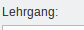
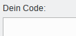
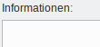
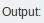
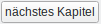
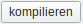
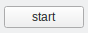
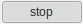

Hier kannst du gegebenenfalls Eingaben machen, während dein Programm läuft.
Hier kannst du gegebenenfalls Eingaben machen, während dein Programm läuft.Dieses Programm soll dir helfen die Grundzüge der Programmiersprache Java kennenzulernen und zu verstehen. Dies geschieht Schritt für Schritt in mehreren Kapiteln. In jedem Kapitel findest du Erklärungen und eine Aufgabe zu neuen Inhalten.
Indem du die Aufgabe löst, vertiefst du dein Verständnis und kannst dich selber testen, ob du den Inhalt gut verstanden hast.
Das Hauptfenster ist in drei Spalten aufgeteilt:
 Hier findest du zu jedem Kapitel Erklärungen und eine Aufgabe.
 Hier sollst du ein Programm schreiben, um die gestellte Aufgabe zu lösen. Häufig ist bereits ein Teil des Programms vorgegeben.
 Hier erhälst du Hinweise zu deinen Lösungen.
 Hier wird die Ausgabe deines Programms angezeigt.
Hier kannst du gegebenenfalls Eingaben machen, während dein Programm läuft.
Im unteren Bereich befinden sich drei Tasten:
 Hier gelangst du zum nächsten Kapitel.
 Java ist eine sogenannte Compilersprache. Dies bedeutet, dass die vom Menschen geschriebene Zeilen erst von einem Programm (dem Compiler) in einen Maschienencode umgewandelt werden müssen. Der Compiler prüft dabei deine Zeilen auf Syntax-Fehler (Schreibfehler) und meldet eventuelle Fehler.
 Wenn der Compiler das Programm erfolgreich kompilieren konnte, kannst du hier dein Programm starten. Während dein Programm läuft, ändert sich die Taste zu  und du kannst es anhalten.
Im Menü hast du vier Möglichkeiten:
Kapitelwahl: Hier kannst du ein beliebiges Kapitel wählen.
Persönliche Informationen: Hier kannst du Informationen zu deiner Person angeben. Diese Informationen werden später dazu genutzt, die Aufgaben auf dich anzupassen, so dass sie interessanter sind.
zeige Startinformationen: Hier kannst du dir dieses Fenster nochmal anzeigen lassen.
Beenden: Hier kannst du das Programm beenden.